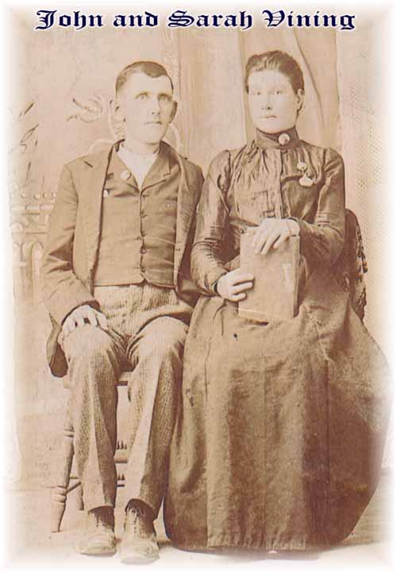
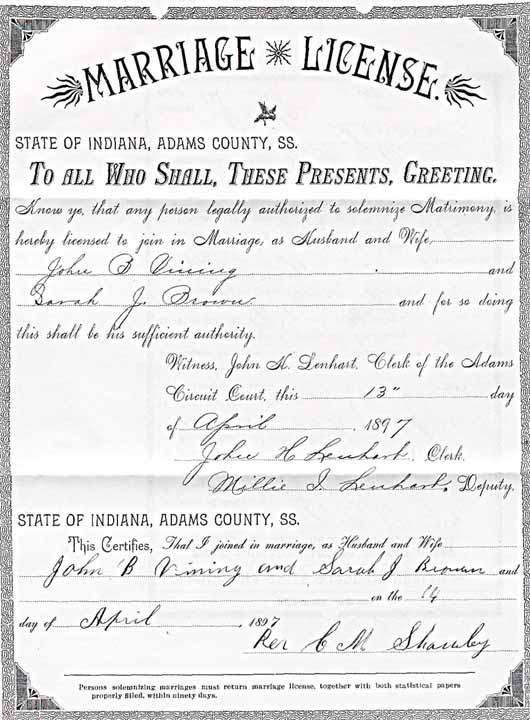
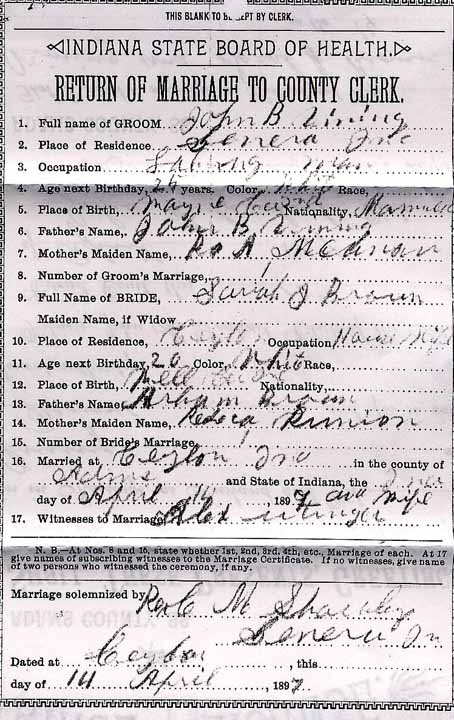
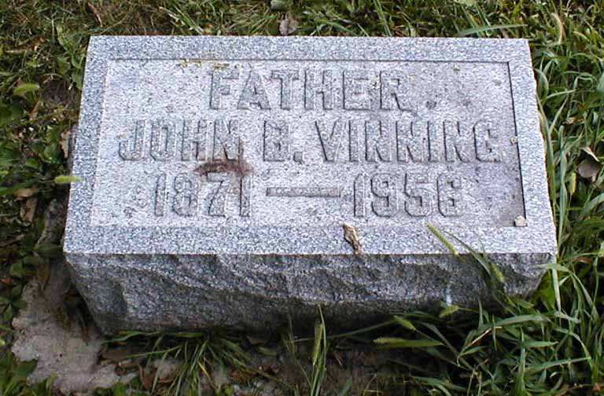
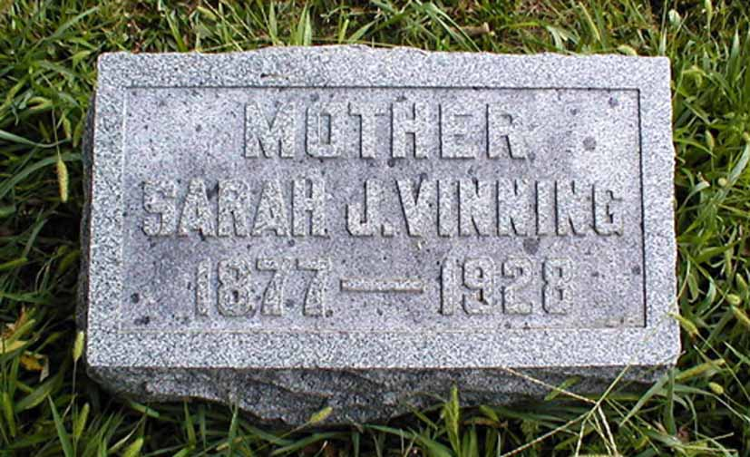

Marriage Data
Marriage license and return of marriage for Ammi Vining and Sarah Jane (Brown) Vining:

Census Data
| 1900 | 1910 | 1920 | 1930 | 1940 | |
| John A. Bradley Vining | ? | ? | ? | 58 | ? |
| Sarah Jane (Brown) Vining | ? | ? | ? | dead | |
| William McKinley Vining | ? | ? | ? | ? | ? |
| Donald Dewey Admiral Vining | ? | ? | ? | married and living in separate household | |
| Delphia Mae Vining | ? | ? | ? | married and living in separate household | |
| Dessie Sylvertia Vining | ? | ? | married and living in separate household | ||
| Anna Rebecca Vining | ? | ? | living with brother Donald Admiral Dewey Vining and family | ||
| Lloyd Henry Vining | ? | ? | 21 | ? | |
| Mary Geraldine Vining | ? | ? | ? | ||
| Helen Josephine Vining | ? | ? | ? |

Death Data
Gravestones for Ammi Vining and Sarah Jane (Brown) Vining (note spelling of surname):
